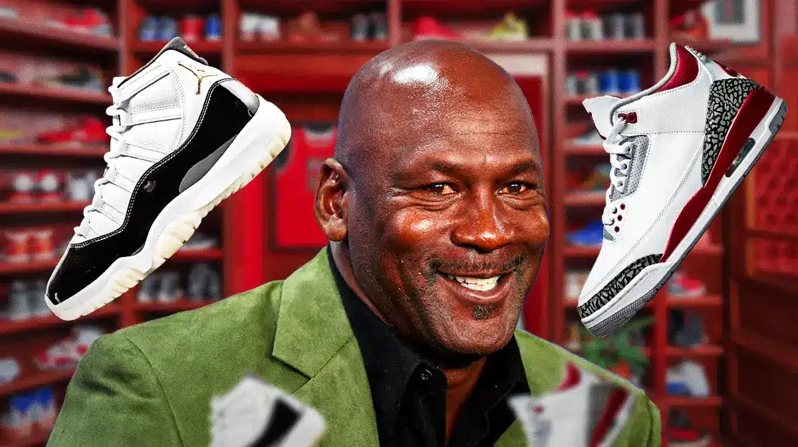

Jordan 1
Air Jordan 1 (1985): The original, iconic sneaker that started it all. Known for its high-top design, sleek leather build, and bold colorways, the AJ1 revolutionized basketball shoes and sneaker culture.
Jordan 2
Air Jordan 2 (1986): A more luxurious model with Italian craftsmanship, leather construction, and a sleek, understated design. It was the first Jordan to feature a higher price point.
Jordan 3
Air Jordan 3 (1988): Featuring the first-ever visible Air cushioning in the sole and the debut of the iconic elephant print, the AJ3 also introduced the Jumpman logo, solidifying its cultural impact.
Jordan 4
Air Jordan 4 (1989): Known for its mesh paneling, winged eyelets, and a more structured design, the AJ4 became a fan favorite thanks to its versatility and standout colorways.
Jordan 5
Air Jordan 5 (1990): Inspired by World War II fighter jets, it featured a reflective tongue, translucent outsole, and shark-tooth-like designs on the midsole. A symbol of speed and style.
Jordan 6
Air Jordan 6 (1991): Known for its clean, smooth design, and the addition of a rubberized toe cap for extra support. The AJ6 was the shoe Michael Jordan wore during his first NBA Championship win.
Jordan 7
Air Jordan 7 (1992): Featuring a bold, multi-colored design inspired by African culture, the AJ7 was also the shoe Jordan wore during his second NBA Championship and the 1992 Olympics.
Jordan 8
Air Jordan 8 (1993): A high-performance sneaker with a unique cross-strap design, the AJ8 featured a more complex structure and cushioning, worn by Jordan during his third consecutive championship win.
Jordan 9
Air Jordan 9 (1994): The first Jordan released after MJ's first retirement, the AJ9 has a distinct, international appeal with a clean, futuristic look, symbolizing Jordan's global influence.
Jordan 10
Air Jordan 10 (1995): The AJ10 had a streamlined design with clean lines and featured a sole that commemorated MJ's achievements in the NBA, including his first MVP award.
Jordan 11
Air Jordan 11 (1996): One of the most beloved Jordans, the AJ11 featured patent leather for the first time and became known for its sleek, high-fashion look. It was worn by Jordan during his first comeback and the 1996 Championship.
Jordan 12
AAir Jordan 12 (1997): The AJ12 was inspired by the Japanese "rising sun" flag and featured a durable leather upper with a full-length Zoom Air cushioning system. It was worn during Jordan's fifth NBA Championship win.